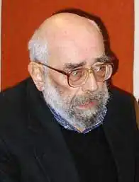
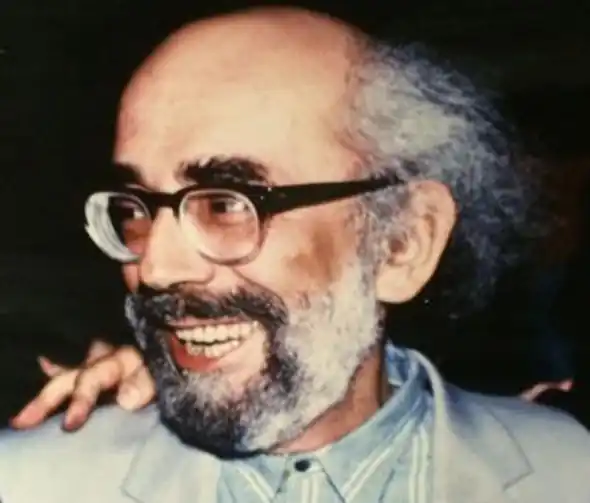
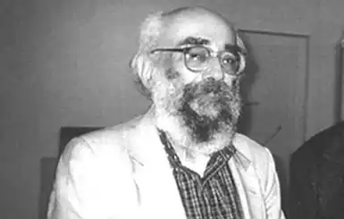

Рубчак Богдан (6 березня 1935, Калуш) — письменник (поет, літературознавець, есеїст). Автор збірок поезій, співредактор і співупорядник книжок, представник модернізму в українській поезії 1960-их років, член Нью-Йоркської групи. З 1948 у США: з 1968 викладач у Рутґерському, з 1973 — в Іллінойському університетах.
Батько Богдана Рубчака був кооператором, а дядько — актором (Іван Рубчак). Початкову освіту здобув у Калуші, у 1943 році з батьками виїхав до Німеччини, де в нього помирає батько. Богдан залишився в таборі переміщених осіб в Діллінгені, там продовжував свою освіту до 1948 року, а відтак виїхав з матір'ю до Америки, замешкали вони у Нью-Джерзі.
У 1948—1952 роках Богдан Рубчак проживає в Нью-Йорку, опісля переїздить до Чикаго, де успішно закінчує середню школу — і продовжує свої студії в університетах Нейві-Пір та Рузвельта. Вивчає мови та порівняльну історію світової літератури. Коли Рубчакові виповнився 21 рік, вийшла його перша поетична збірка "Камінний сад", присвячена матері, яка весь час працювала, забезпечуючи йому освіту. Сам поет, не покидаючи школи, також перейшов на підробітки. У 1958 році Рубчака призвали до американського війська — і він два роки служив у Кореї. Повернувшись з війська у 1960 році, готує другу збірку поезій — "Промениста зрада". Поновлює свої студії спершу в університеті Рузвельта, далі — в Чиказькому університеті, коли й виходить третя його збірка поезій — "Дівчина без країни" (1963). У 1964 році Манітобський університет запрошує Рубчака на викладача славістики. Опісля він переїздить до Нью-Йорка, працює в престижному видавництві "Гарпер-енд-Ров", згодом стає директором української редакції Радіо "Свобода" в Нью-Йорку. У 1967 році виходить його четверта збірка поезій "Особиста Кліо", присвячена дружині Мар'яні. Через кілька років стає викладачем славістики в університеті Ратгерс, починає працювати над докторатом з порівняльної літератури: дисертацію "Теорія метафори" завершив і захистив у 1977 році. А в 1974 році стає професором славістики й україністики в Іллінойському університеті. Довгі роки співробітничав із літературним журналом "Сучасність". Перекладає з англійської, німецької, французької. Вважається одним із видатних поетів української діаспори. Окрім збірок поезій написав понад 100 статей та есе, разом з Богданом Бойчуком упорядкував антологію сучасної української поезії на заході, яка вийшла у 1969 році в двох томах під назвою "Координати". Перед цим, у 1967 році, редагував разом із Святославом Гординським "Зібрані твори" Богдана-Ігоря Антонича, упорядкував разом із Б. Бойчуком антологію поезії "Координати" (І — II, 1969). Збірки поезій: